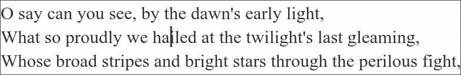

Word selection QMK macro
Pascal Getreuer, 2021-11-12 (updated 2026-02-03)
Overview
This post describes a QMK macro for a button that selects the current
word, assuming conventional text editing hotkeys. Press it again to
extend the selection to the following word. The effect is similar to
word selection (W) in the Kakoune editor.

Line selection: Similarly, press the button with shift to select the current line, and press it again to extend the selection to the following line.
Clearing the selection: During a selection, press ← or → to deselect and choose which selection endpoint to jump the cursor to.
Add it to your keymap
Step 1: Install my community modules. Then
enable module getreuer/select_word
in your keymap.json file. Or if keymap.json
does not exist, create it with the following content:
{
"modules": ["getreuer/select_word"]
}Step 2: Use one or more of the following keycodes in your layout. Or alternatively, you may skip this step and use Select Word’s functions to invoke word and line selections programmatically.
| Keycode | Short alias | Description |
|---|---|---|
SELECT_WORD |
SELWORD |
Forward word selection. Or with Shift, line selection. |
SELECT_WORD_BACK |
SELWBAK |
Backward word selection. |
SELECT_LINE |
SELLINE |
Downward line selection. |
SELECT_LINE_UP |
SELLUP |
Upward line selection. |
Press SELWORD to select the current word. Press it again
to extend the selection to the following word. The effect is similar to
word selection (W) in the Kakoune editor. Or for line selection,
press SELWORD with shift to select the current line, and
press it again to extend the selection to the following line.
Mac hotkeys
On Mac OS, different hotkeys are needed for word and line selection than are conventional on Windows and Linux. There are several ways that Select Word can be configured to send the appropriate hotkeys:
Windows/Linux hotkeys are assumed by default. To default to Mac hotkeys instead, define in your
config.hfile:#define SELECT_WORD_OS_MACIf OS Detection is enabled, Select Word uses it determine which kind of hotkeys to send. An edge case is that OS Detection is sometimes fails (
OS_UNSURE). If this happens, Select Word’s logic falls back to the previous bullet point.For direct control, define in
config.h:#define SELECT_WORD_OS_DYNAMICThen in
keymap.c, define the callbackselect_word_host_is_mac(). Return true for Mac hotkeys, false for Windows/Linux. If OS Detection is also enabled, theselect_word_host_is_mac()callback takes precedence.For instance, suppose layer 0 is your base layer for Windows and layer 1 is your base layer for Mac. Indicate this by adding in
keymap.c:bool select_word_host_is_mac(void) { return IS_LAYER_ON(1); // Layer 1 on => Mac. }Another possibility: suppose you use Magic Keys
QK_MAGIC_TOGGLE_CTL_GUIto swap Ctrl and GUI keys when on Mac. This can be indicated to Select Word withbool select_word_host_is_mac(void) { return mod_config(MOD_LGUI) == MOD_LCTL; // GUI/Ctrl swapped => Mac. }
Functions
For more flexibility, Select Word’s word and line selection may be invoked programmatically. This way you can control what manner of input triggers these selection actions, for instance, invoking line selection from a tap dance.
| Function | Description |
|---|---|
select_word_register(action) |
Register (press) selection action. |
select_word_unregister() |
Unregister (release) selection hotkey. |
select_word_tap(action) |
Register and unregister selection action. |
The action argument in these functions specifies the
type of selection:
'W'= word selection'B'= backward word selection, left of the cursor'L'= line selection'U'= upward line selection
Repeating or holding these actions extends the selection.
The functions follow the pattern of QMK’s
register_code() and unregister_code(). A
selection hotkey is first “registered” or pressed with
select_word_register(action). This should be followed by a
call to select_word_unregister() to “unregister” or release
the hotkeys. The point of these separate register and unregister calls
is to enable holding the hotkey as a means to extend the selection
range.
⚠ Warning
Forgetting to unregister results in stuck keys:
select_word_register(action) must be followed by
select_word_unregister().
Alternatively, function select_word_tap(action) may be
used to register and then immediately unregister (“tap”) selection
action. This is a simpler method of invoking word and line
selection with the caveat that it does not perform hotkey holding.
If you use Alternate
Repeat Key, SELWBAK may be defined as the alternate
repeat of SELWORD, and vice versa, with
uint16_t get_alt_repeat_key_keycode_user(uint16_t keycode, uint8_t mods) {
switch (keycode) {
case SELWBAK: return SELWORD;
case SELWORD: return SELWBAK;
// ...
}
return KC_TRNS;
}Idle timeout
By default, Select Word clears its internal state after 5 keconds.
This is useful to improve behavior when using Select Word and a mouse
together. To configure, define SELECT_WORD_TIMEOUT in
config.h with a time in milliseconds:
#define SELECT_WORD_TIMEOUT 2000 // When idle, clear state after 2 seconds.If SELECT_WORD_TIMEOUT is set to 0, it never times
out.
Explanation
The macro checks for events involving
SELECT_WORD_KEYCODE. For word selection, the first press of
the macro sends the keys Ctrl+→,
Ctrl+← to move the cursor to the beginning of the word,
then holds Ctrl+Shift+→ to select to the end of the
word. On subsequent presses, Ctrl+Shift+→ is pressed
again to extend the selection to the next word.
For line selection, the macro sends Home, Shift+End on the first press, then ↓ on subsequent presses.
The state variable keeps track of whether the macro has
done the initial press and whether it is making a word vs. line
selection.
Acknowledgements
Thanks to @Regnareb, @arkanoryn, and @fuesec on GitHub for helpful feedback and suggestions to make Select Word better.